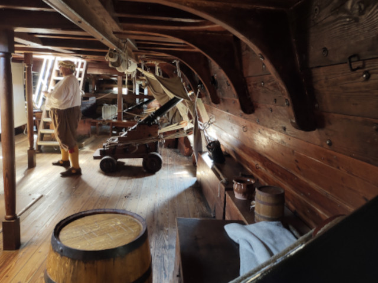

Ítaca
Después de innumerables pruebas, Odiseo divisa su tierra. Su viaje termina, pero debe descubrir si todavía tiene un lugar al que llamar hogar. El regreso es posible, aunque quien vuelve ya no es el mismo que partió.

Después de innumerables pruebas, Odiseo divisa su tierra. Su viaje termina, pero debe descubrir si todavía tiene un lugar al que llamar hogar. El regreso es posible, aunque quien vuelve ya no es el mismo que partió.
